01 · TransformationDonnées fictives
Transformation XML A → XML B
Problème : transformer un modèle source vers un modèle cible sans perte silencieuse.
Résultat4 sources → 3 sorties + 1 rejet
Examiner la transformation →Démonstrations techniques
Examinez les données d’entrée, le traitement, les résultats et les livrables de chaque cas.
Les jeux de données sont fictifs et créés pour illustrer les prestations de PPR-Solution. Ils ne correspondent pas à des missions clients.
Filtrer les cas
Aucun résultat
Modifiez un critère ou revenez à l’ensemble des cas.
Problème : transformer un modèle source vers un modèle cible sans perte silencieuse.
Résultat4 sources → 3 sorties + 1 rejet
Examiner la transformation →Problème : qualifier les anomalies d’un corpus avant sa livraison.
Échelle128 fichiers · 42 constats
Examiner l’audit →Problème : consolider des informations réparties dans plusieurs fichiers XML.
Résultat3 fichiers → 4 lignes · 6 champs
Examiner l’extraction →Problème : produire une publication lisible à partir de données structurées.
LivrablesXML → PDF + HTML
Examiner la publication →Vue détaillée
Sélectionnez « Examiner » sur l’un des cas pour afficher ici ses entrées, son traitement, ses résultats et ses livrables.
Démonstration · données fictives
Un modèle source doit être transformé vers un modèle cible sans perte silencieuse.
Quatre pièces fictives issues de parts.xml doivent alimenter items.xml. Trois sont produites ; la pièce sans identifiant est rejetée et une valeur par défaut est tracée.
<parts> <part id="P-482" state="legacy">Hydraulic pump</part> <part id="P-483" state="active">Relief valve</part> <part id="P-484">Pressure hose</part> <part>Unidentified seal</part></parts>
Mapping source → cible
part/@id | → | item/code |
part/text() | → | item/name |
part/@state | → | item/status |
part/@state absent | → | item/status="draft" |
part/@id absent | → | rejet |
<items> <item code="P-482" status="legacy">Hydraulic pump</item> <item code="P-483" status="active">Relief valve</item> <item code="P-484" status="draft">Pressure hose</item></items>draft.Démonstration · données fictives
Un corpus contient plusieurs anomalies et doit être qualifié avant livraison.
Le contrôle qualifie un corpus fictif de 128 fichiers avant livraison et sépare les erreurs techniques des avertissements métier.
Le corpus fictif contient 128 fichiers et plusieurs familles d’anomalies qui peuvent se cumuler dans un même document.
| État des fichiers | Nombre |
|---|---|
| Fichiers analysés | 128 |
| Valides | 96 |
| À examiner | 32 |
Démonstration · données fictives
Des informations utiles sont réparties dans plusieurs XML et doivent être consolidées.
Trois fichiers XML fictifs sont parcourus. Six champs sont sélectionnés et quatre produits sont consolidés ; une valeur absente est explicitement normalisée.
<product id="P-482" reviewed="true">ACME · Hydraulic · legacy · FR</product><product id="P-483">Boreal · Pneumatic · active · DE</product><product id="P-484">[fabricant absent] · Hydraulic · draft · FR</product><product id="P-485">ACME · Electrical · active · ES</product>
Sélection et renommage
/product/@id | → | product_id |
/product/manufacturer | → | manufacturer |
/product/category | → | category |
/product/status | → | status |
/product/country | → | country |
/product/@reviewed | → | reviewed |
| product_id | manufacturer | category | status | country | reviewed |
|---|---|---|---|---|---|
| P-482 | ACME | Hydraulic | legacy | FR | true |
| P-483 | Boreal | Pneumatic | active | DE | false |
| P-484 | Non renseigné | Hydraulic | draft | FR | false |
| P-485 | ACME | Electrical | active | ES | false |
3 fichiers parcourus · 4 lignes produites · 1 valeur normalisée
Démonstration · données fictives
Des données XML produisent une publication lisible par un utilisateur final.
Un module XML fictif contient six types de blocs documentaires. Ils sont transformés pour produire une publication PDF et HTML destinée à la consultation.


Contrôles de publication
À venir
Migration XML v1 → v2 et précontrôle d’un corpus S1000D. Elles seront publiées lorsqu’un jeu de données fictif et des livrables inspectables seront suffisamment construits.
Accéder au validateur S1000D secondaire →Votre corpus
Ces démonstrations utilisent des données fictives. Un corpus réel impose ses propres formats, règles et exceptions ; un échantillon suffit pour cadrer une approche adaptée.